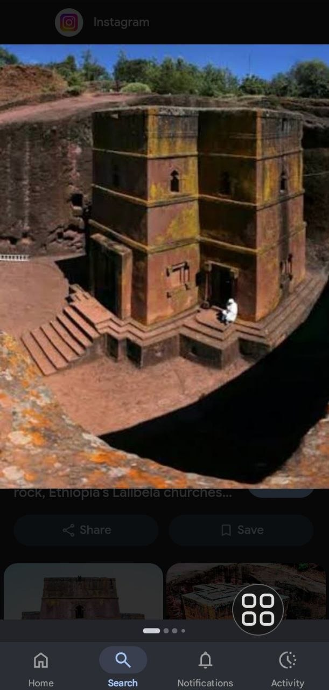
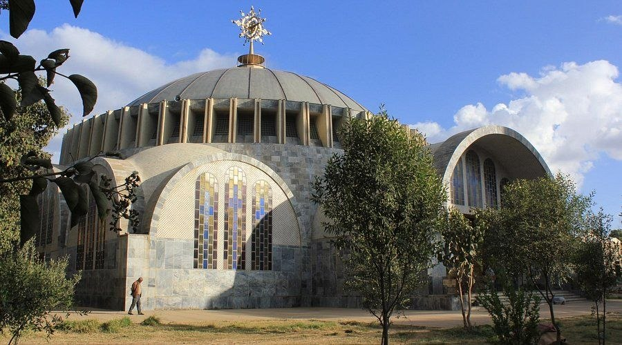
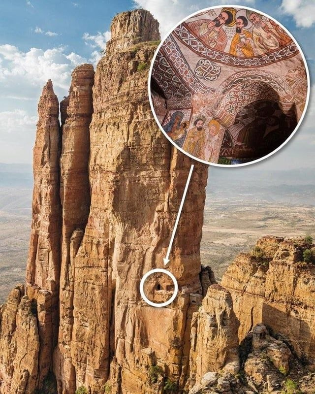
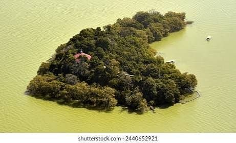
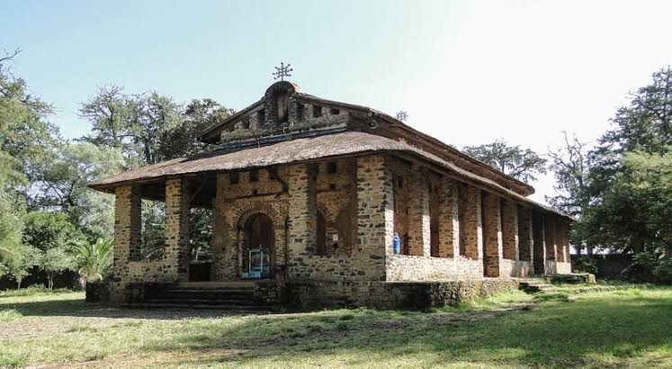
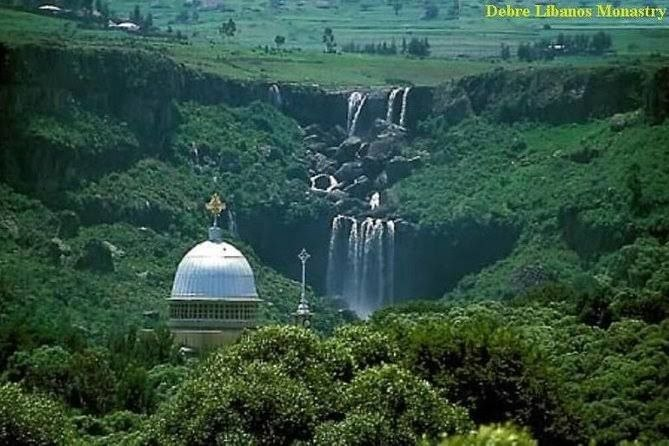
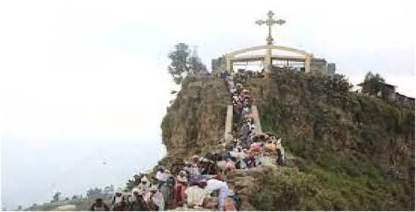
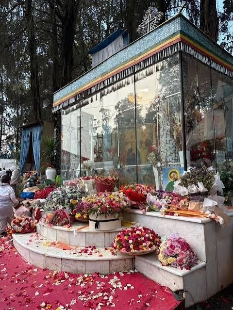

GALLERY
Ten sacred places of Ethiopia, in pictures.

Lalibela
Churches carved down into the rock and linked by trenches and tunnels. Bete Giyorgis is shaped like a cross.

Axum
Home of Our Lady Mary of Zion. Pilgrims gather every year for the Hidar Zion festival in November.

Debre Damo
A monastery on a flat-topped mountain with sheer cliffs. The only way up is a rope.

Yeha
A temple of finely cut stone, among the oldest standing buildings in Ethiopia.

Abuna Yemata Guh
A church inside a cliff face in the Gheralta mountains, reached by a steep climb.

Lake Tana
Monasteries on islands and peninsulas, with walls covered in bright paintings.

Debre Berhan Selassie
A Gondar church whose ceiling is covered with painted angel faces.

Debre Libanos
A major pilgrimage site honoring Abune Tekle Haymanot, set above a deep gorge.

Gishen Mariam
A monastery on a high mountain in Wollo, visited by pilgrims who honor its cross relic.

Entoto Maryam
A church high on Mount Entoto above Addis Ababa, near the old palace of Menelik II.